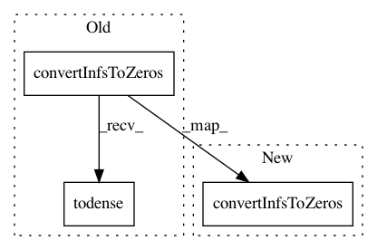

f36350326cb52c8d639cb0a63734fbe308a8ba35,hicexplorer/hicTransform.py,,_obs_exp,#Any#,107
Before Change
obs_exp_matrix_ = obs_exp_matrix(pSubmatrix)
obs_exp_matrix_ = convertNansToZeros(csr_matrix(obs_exp_matrix_))
obs_exp_matrix_ = convertInfsToZeros(csr_matrix(obs_exp_matrix_)).todense()
return obs_exp_matrix_
def _obs_exp_non_zero(pSubmatrix, ligation_factor):
After Change
obs_exp_matrix_ = obs_exp_matrix(pSubmatrix)
obs_exp_matrix_ = convertNansToZeros(csr_matrix(obs_exp_matrix_))
obs_exp_matrix_ = convertInfsToZeros(csr_matrix(obs_exp_matrix_))
// if len(obs_exp_matrix_.data) == 0:
// return np.array([[]])
return obs_exp_matrix_ // .todense()
In pattern: SUPERPATTERN
Frequency: 4
Non-data size: 3
Instances
Project Name: deeptools/HiCExplorer
Commit Name: f36350326cb52c8d639cb0a63734fbe308a8ba35
Time: 2020-06-26
Author: wolffj@informatik.uni-freiburg.de
File Name: hicexplorer/hicTransform.py
Class Name:
Method Name: _obs_exp
Project Name: deeptools/HiCExplorer
Commit Name: f36350326cb52c8d639cb0a63734fbe308a8ba35
Time: 2020-06-26
Author: wolffj@informatik.uni-freiburg.de
File Name: hicexplorer/hicTransform.py
Class Name:
Method Name: _obs_exp_non_zero
Project Name: deeptools/HiCExplorer
Commit Name: f36350326cb52c8d639cb0a63734fbe308a8ba35
Time: 2020-06-26
Author: wolffj@informatik.uni-freiburg.de
File Name: hicexplorer/hicTransform.py
Class Name:
Method Name: _obs_exp_lieberman
Project Name: deeptools/HiCExplorer
Commit Name: f36350326cb52c8d639cb0a63734fbe308a8ba35
Time: 2020-06-26
Author: wolffj@informatik.uni-freiburg.de
File Name: hicexplorer/hicTransform.py
Class Name:
Method Name: _pearson